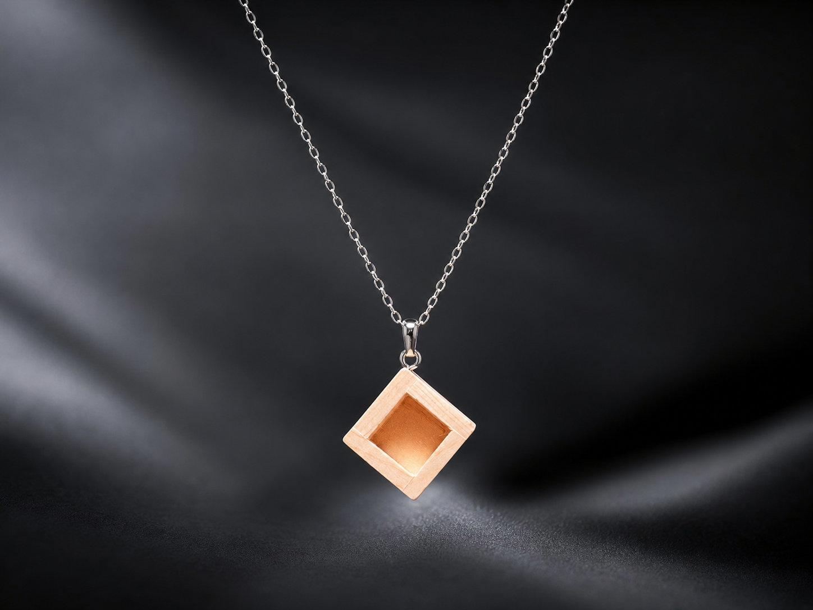
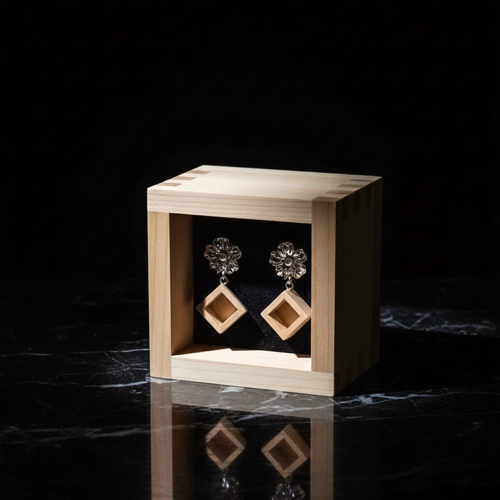
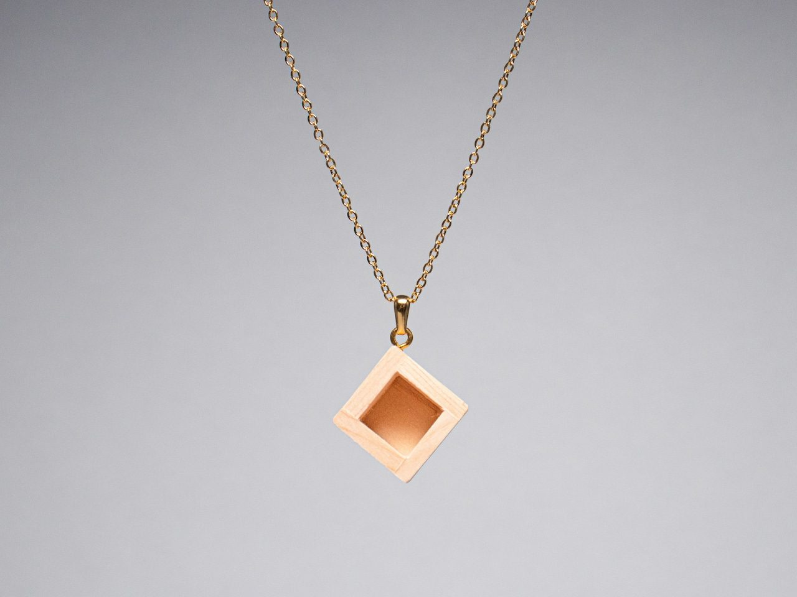
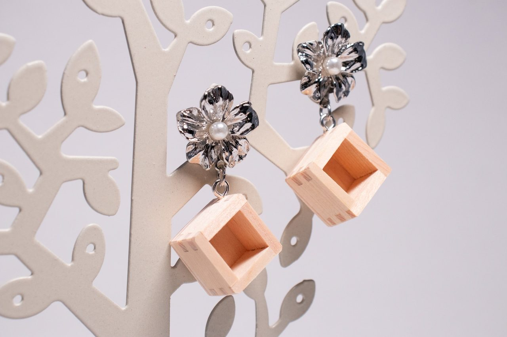
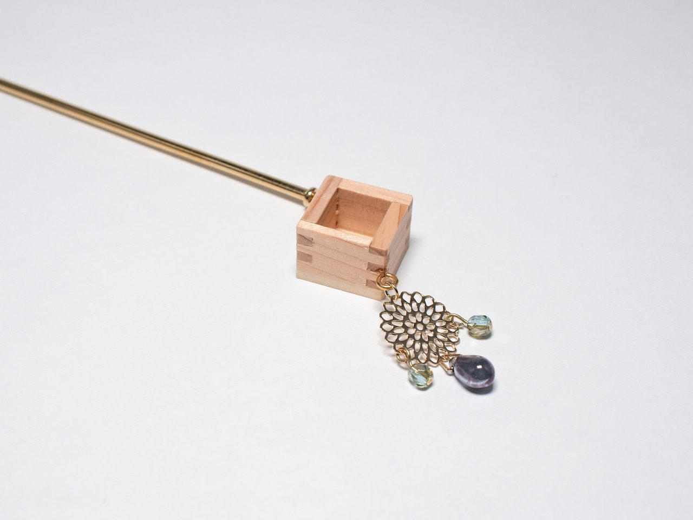

Wear it
Necklaces, earrings, and kanzashi designed for a modern wardrobe, carrying Japanese craft with restraint.
A 1,300-year-old sacred wooden vessel, reduced to a two-centimeter jewel. Made from hinoki cypress, worn as art, displayed as a quiet object of Japan.
KUMIKI transforms the masu into jewelry and interior art. Each piece carries hinoki grain, miniature joinery, and the quiet scent of Japanese cypress.
It is made to live twice: on the body, where it becomes conversation; and in its display case, where it becomes a contemplative object.

Necklaces, earrings, and kanzashi designed for a modern wardrobe, carrying Japanese craft with restraint.

Every piece rests in a masu display case, becoming a small interior object when it is not worn.
The masu began as a wooden vessel for rice and sake. KUMIKI reimagines that ceremonial form at an intimate scale, preserving the geometry, hinoki texture, and sense of blessing.

Three forms, one quiet language: the necklace as signature, earrings as movement, kanzashi as sculptural ritual. Pricing is shared by private inquiry.




A KUMIKI piece arrives as a ceremony: a branded masu box, red mizuhiki, a display case, and the first quiet trace of Japanese cypress.
Each KUMIKI piece is made in limited monthly capacity. Tell us the form, material, and intention. We will reply within 24 hours with availability and next steps.